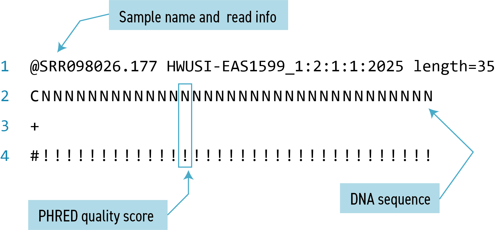
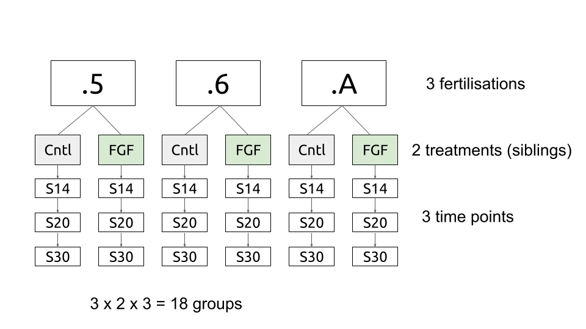

Independent Study to prepare for workshop
Omics 1: Hello data!
Omics workshops
- 🐸 the difference between the control and the FGF treated sibling at S30
- 🐭 the difference between HSPC and Prog cells
- 🍂 ???????
See later workshops.
Sequence Data
- reads
- quality control
- align/pseudoalign
- quantify
- normalise
Aims
- find important genes
- what is ‘important’
- expressed
- differentially expressed i.e., which genes are significantly higher in one group vs another
What is a read
- FASTQ format files
- sequences and information about each sequence’s read accuracy

Differential expression
- what is differentially expressed
- how are DE genes related
- what are DE genes involved with
Stem cells: background
Cells were sorted using flow cytometry on the basis of cell surface markers. There are three cell types:
long-term haematopoetic stem cells (LT-HSCs) defined as : Lineage- ckit+ Sca1+ CD34- Flk2-
haematopoetic stem and progenitor cells (HSPCs) defined as : Lineage- Sca1+ ckit+
progenitor cells (Progs) defined as : Lineage- Sca1- ckit+
Each cell is then sequenced to quantify all the transcripts in each cell. different transcripts (genes) were identified.
Stem cells: background
- Raw data: GEO Series GSE81682
- Illumina HiSeq
- short reads 150-300bp
- A single-cell resolution map of mouse hematopoietic stem and progenitor cell differentiation (Nestorowa et al. 2016)
- 3,840 samples
- Reads were aligned using G-SNAP and the mapped reads were assigned to Ensembl genes HTSeq
- GSE81682_HTSeq_counts.txt.gz (bottom of the page). And GSE81682_HTSeq_counts.txt.zip
Stem cells: Processing so far
- selection of cells
- selection of genes: subset of surfaceome
- log2 normalised values
Stem cells: Aims
- Find interesting cell surface molecule genes that vary between cell types.
Frog development: background
- 3 fertilisations = replicates
- two siblings from each fertilisation one control, on FGF treated
- sequenced at three time points: S14, S20, S30
- 3 x 2 x 3 = 18 groups

Frog development: background
- Raw data: GEO Series GSE81682
- Illumina HiSeq
- short reads 150-300bp
- A single-cell resolution map of mouse hematopoietic stem and progenitor cell differentiation (Nestorowa et al. 2016)
- 3,840 samples
- Reads were aligned using G-SNAP and the mapped reads were assigned to Ensembl genes HTSeq
- GSE81682_HTSeq_counts.txt.gz (bottom of the page). And GSE81682_HTSeq_counts.txt.zip
Frog development: Processing so far
- selection of cells
- selection of genes: subset of surfaceome
- log2 normalised values
Frog development: Aims
- Find interesting cell surface molecule genes that vary between cell types.
Deliverables
Describe the data
- Number of cells/samples/reps/treatments
- number of genes
- type of expression values
- prior processing
- missing values
- overview of expression
- clustering of genes/samples
Report on differential expression between two groups
- number of DE at 1%, 5% and 10%.
- table of expression, fold changes, signifcance at each sig.
- Volcano plot
Report list of marker candidate gene IDs for a cell type of choice. Justify filters. Table with fold FC, p values, IDs, canonical gene names
Interpret the biology by reporting on a few group of genes and the processes in which they are involved.
Report on your chosen genes and explain why you think they are good candidates for follow up work